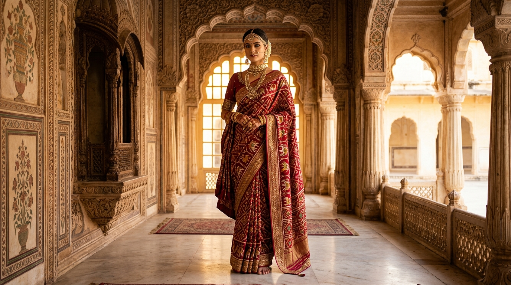
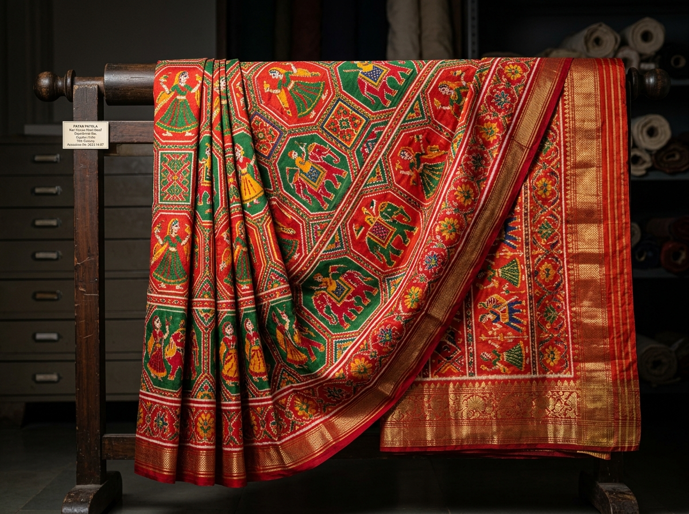
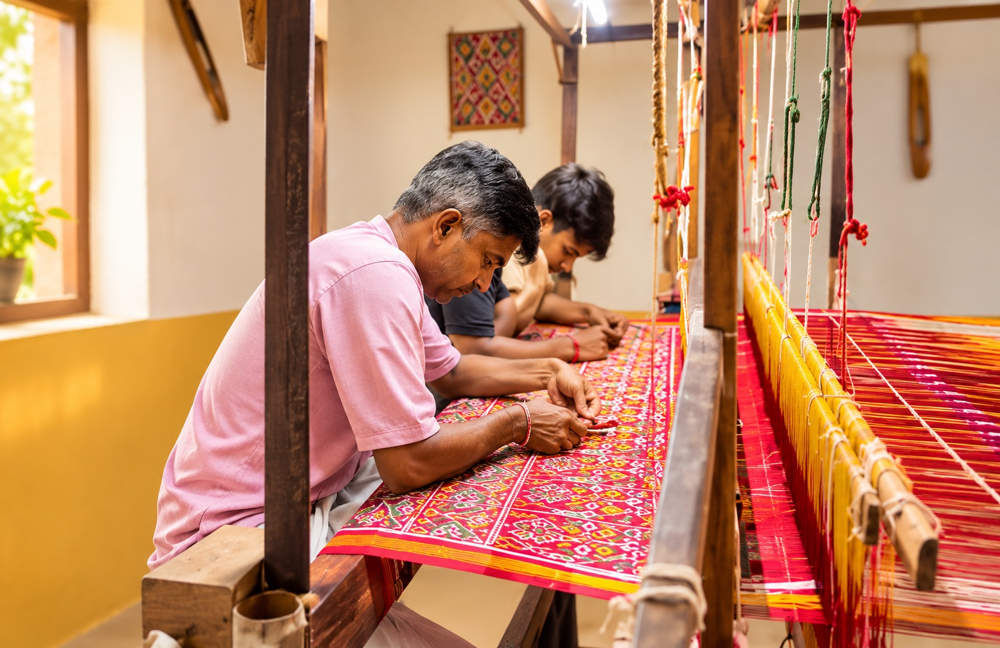

The Eternal Royal Silk of Gujarat
Where sacred mathematical geometry meets pure mulberry silk. Every single warp and weft thread is individually tied, resist-dyed, and handwoven to create identical vibrancy on both sides—crafted to outlive generations.
The Royal Saree Collection
Each drape represents hundreds of hours of patient artisan devotion. Filter our collection by weave style or auspicious motif.
The Language of Motifs
In Patola weaving, motifs are sacred cosmic symbols. Explore each motif and zoom in to inspect the mathematically aligned warp and weft double ikat silk.
Nari Kunjar (Elephant & Lady)
Royal majesty of the elephant combined with the elegance of celestial court dancers.
Ratanchowk Bhat (Jewel Square)
Four-cornered gem matrix embodying universal harmony, wealth, and spiritual protection.
Chhabdi Bhat (Floral Basket)
Auspicious temple blossom baskets invoking blessings of fertility and family prosperity.
Popat-Mor (Parrot & Peacock)
Folklore symbols of romantic sweetness, joyful monsoon rain, and immortal love.

The 8-Fold Weaving Ritual
Unlike ordinary printed or jacquard sarees, a true Double Ikat Patola is created through sheer mathematics and handloom mastery.
Pure Mulberry Silk Spinning
Only premium eight-ply raw mulberry silk yarns are spun and degummed to achieve high tensile resilience and radiant natural lustre.
Geometric Graph Plotting
The Master Weaver drafts the entire saree design on graph paper. Every intersecting coordinate of warp (vertical) and weft (horizontal) is calculated before a single knot is tied.
Bandhani on Loose Silk Threads
Cotton strings are tied tightly around microscopic clusters of silk yarn according to the graph to block dyes from penetrating specific zones.
Natural Herbal Dyes
Threads undergo repetitive cycles of tying, untying, and boiling in natural pigments—madder root for crimson, fermented indigo for peacock blue, and turmeric for golden saffron.
Mounting on Slanted Rosewood Loom
Dyed warp yarns are stretched onto a handcrafted rosewood loom, tilted at an angle so two master weavers can balance body weight and maintain uniform tension.
Bamboo Needle Alignment
With every single pass of the weft shuttle, artisans use pointed bamboo pins to microscopically lock each color point in place. Only 8 to 10 inches can be woven in a full working day.
Identical Front & Back Radiance
Because every thread is dyed completely through before weaving, the finished masterpiece is 100% identical on both front and back. There is no 'reverse' side.
Silk Mark & Lifetime Guarantee
Each saree is numbered, tested, and sealed with government Silk Mark certification, arriving in a custom handcrafted velvet box with an authenticity scroll.

"We don't weave threads; we weave prayers and mathematics that will live for three hundred years."
— Master Artisan, 4th GenerationPreserving An Ancient Loom Lineage
For centuries, the traditional weavers of Gujarat have guarded the closely held secrets of Double Ikat. Passed down strictly from father to son, this complex mathematical art requires two master artisans working synchronously on a single loom.
By collecting a Virasat Patola drape, you become a custodian of this rare handloom heritage, ensuring master weaver families continue to practice their sacred art with dignity and pride.
- 100% Ethical Fair-Trade compensation direct to weaver families
- No modern powerlooms or digital printed replicas
- Personal certificate signed by the master craftsman who crafted your saree
How to Recognize Real Patola
Because of its high value, machine-printed imitations are common in the market. Here is the Virasat promise of absolute authenticity.
Dual-Side Identical Clarity
A genuine Double Ikat Patola has absolutely zero wrong side. The color intensity and geometric boundaries are 100% identical on both sides.
Silk Mark Government Seal
Each drape is certified by the Silk Mark Organisation of India, guaranteeing 100% natural pure mulberry silk with zero synthetic blending.
Lifetime Dye Guarantee
True to the folklore "Phate Pan Fite Nahi", natural resist-dyed colors seep into the core of silk filaments and never fade or bleed.
Words from Royal Trousseau Collectors
"Wearing the Nari Kunjar Patola on my wedding day was ethereal. The dual-sided color radiance and pure silk weight was admired by everyone. It is truly an investment piece for my daughter."
"I visited their heritage loom studio through the bespoke consultation. Seeing the master weavers spend hours aligning single millimetres of yarn gave me profound respect for this priceless art."
"The Ratanchowk silk saree arrived in the velvet trunk with full Silk Mark documentation. The geometry is flawless. Exceptional customer service from their concierge team."
Bespoke Loom Experience & Bridal Consultation
Whether you wish to customize a family heirloom for an upcoming wedding or experience the rhythmic clack of the loom in person, our master concierges are at your service.
- 1-on-1 High-Definition Video Loom Consultation
- In-person Traditional Loom Studio Tour
- Custom Motif & Blouse Zari Personalization